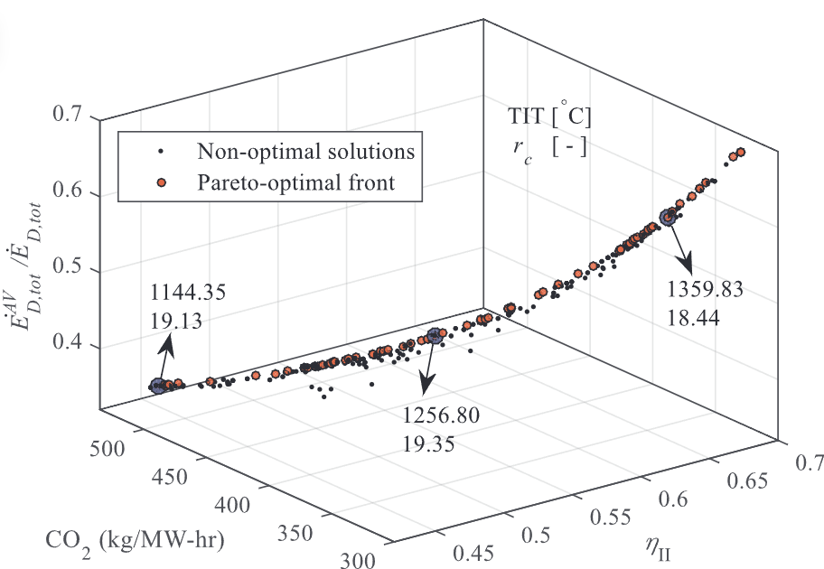

A new approach for optimization of combined cycle system based on first level of exergy destruction splitting
Sustainable Energy Technologies and Assessments, 37, pp.100600, 2020. Journal Article

Abstract
A multi-objective optimization of a combined air cooled gas turbine and steam turbine system is carried out using non-dominated sorting genetic algorithm II (NSGA-II). In the optimization process, performance and environmental aspects of the system are considered and the first level of exergy destruction splitting is incorporated. Such parameters as second law efficiency, ratio of total avoidable exergy destruction rate to total exergy destruction rate and CO2 emission in exhaust gases, are considered as the objective functions. Once the model of the system is constructed in engineering equation solver (EES) software and validated, the gas turbine inlet temperature and compressor pressure ratio are considered as the decision variables based on the performed sensitivity analysis. Then, EES is coupled with MATLAB and the multi-objective optimization is performed for various values of gas turbine blade cooling air fractions. By comparing the obtained Pareto optimal points with those of the base case, considerable improvements in the values of the objective functions are observed.